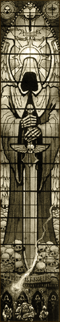
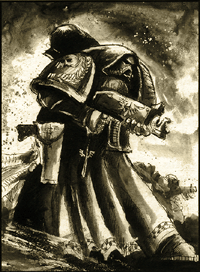
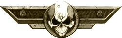
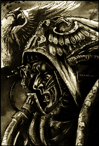

| |
A Sötét
Angyalok
| A Sötét
Angyalok rendházának eredete a múlt ködébe
vész. Nem maradtak fent feljegyzések az
eredetükrõl, sem pedig szerepükrõl a Császár
nagy Keresztes Hadjáratában. A Birodalom
történelmének számos utalása, mely a Hórusz-Eret- nekség átkozott korszakát
taglalja, törlõdött. De a legendák
megemlékeznek arról, hogy a Sötét
Angyalok egyszer meginogtak a Káosz peremén.
Ez a szörnyû árulás beszennyezte a rendházat
és tetteit, örökre foltot hagyott a Sötét
Angyalok becsületén. Ez az õ szégyenük,
ez az, ami miatt oly rendületlenül keresik
a feloldozást évezredek óta.
Ám mára a Sötét Angyalok az
egyik legnagyobbá váltak a rendházak között,
köszönhetõen a nagyra becsült Halálszárny
egységeiknek. Csak a legnagyobb hatalmú
vezetõk tudják a sötét árulás titkát,
hogy mi történt tízezer évvel ezelõtt.
A titkot, mely a Sötét Angyalokat a végtelen
ûr szüntelen fürkészésére készteti és a
végsõ összecsapásra, melyben feloldozás
vagy kárhozat vár a Rendházra. A
Primarchák
Ahhoz, hogy a Sötét Angyalokat megérthessük,
vissza kell mennünk az idõben több mint 10 000
évet. Azokba az idõkbe, amikor még nem léteztek
ûrgárdis- ták, abba az idõbe, amikor a Császár
megalkotta a Primarchákat, segítvén a nagy
Keresztes Hadjáratot, melynek célja: visszahódítani
a galaxist az emberi nem számára. A Császár végtelen
bölcsességében létrehozta a genetikailag módosított
szuperembereket, a Primarchákat. A gének összegyûjtése
és finomí- tása, melyeket ezen elit harcosok
megalkotásához használtak, évszázadokat vett
igénybe. És a Császár legnagyobb erõfeszítése
ellenére sem (melynek során pszi-pajzzsal
rejtette el munkáját) kerülte el a Káosz Sötét
Isteneinek figyelmét. Azoknak azonban nem volt elég
erejük ahhoz, hogy elpusztítsák az inkubátor-
kapszulákat,
melyekben a Primarchák növekedtek, ezért a Káosz
Hatalmai egyesítették erõiket, hogy ellopják
õket a Császártól, majd szétszórták a
kapszulákat, bennük a még kifejletlen terhükkel
szerte a hiperûrben. |
 |
A húsz kapszula évtizedekig, évszázadokig
sodródott a hiperûrben, mielõtt végleg
megpihentek volna egy-egy emberlakta bolygón
szerte a galaxisban. A kapszula, mely azt a
Primarchát hordoz- ta, akit mi késõbb Lion
El'Jonsonként, a Sötét Angyalok alapító
atyjaként ismerünk, egy elszi- getelt világon
landolt, valahol az Iszonyat Szemének északi
peremvidékén - Caliban halálvilágán.
Caliban
A Caliban felszíne kegyetlenebb és kíméletlenebb
volt, mint bármely másik bolygóé a galaxisban.
A kopár erdõségekben, melyek a bolygó felszínét
alkották, számos kreatúra viselte magán a Káosz
rontását. De a többit is kíméletlen vadállattá
változtatta a szüntelen harc a túlélésért. A
Caliban emberi lakossága a kevés erdõtõl
megtisztított részeken óriási erõdökbe és
kastélyokba kényszerült. A Viszály Korában a
nagy hiperûrviharok ezt a világot is elvágták
a Földtõl, lakói pedig visszasüllyedtek
egyfajta fél-feudális állapotok közé, ahol a
lakosság ki volt téve a kis számú katonai elit
uralmának.
A Caliban nemessége nyers és erõszakos
volt. Kora gyermekkoruktól arra nevelték õket,
hogy karddal a kezükben éljenek és haljanak,
nagyszerû harcosok voltak, de rendkívül bátrak.
Ezek a harcosok egy olyan erõpáncélban
harcoltak, mely nagyon hasonlított az elsõ ûrgárdisták
által használt páncélokra, és a leggyakrabban
használt fegyverük is a lánckard és a kézi
sorozatvetõ volt. Számos formáját sajátították
még el a fejlett technológiának, de például
csatába óriási harci hátasokon lovagoltak.
A nemesség élete állandó harc volt,
harc a településeiket fenyegetõ Káosz-szörnyek
szüntelenül áramló hordái ellen. Néhanapján
feltûntek különösen erõs kreatúrák is,
melyek terrorizálni kezd- ték a területen élõ
lakosságot. Ilyenkor a közösség vezetõje
expedíciót hirdetett a szörny legyõ- zésére,
és a nemesség mindenhonnan egybegyûlt, hogy
megpróbálják becserkészni és megölni a szörnyet.
Az a harcos, aki elég szerencsés volt ahhoz,
hogy legyõzze, rangot és elismerést vívott ki
magának. De leggyakrabban csak a szörnyû vég
jutott osztályrészül a káosz szörnyek
karmai és agyarai által.
A fiatal Lion
Ez volt tehát a planéta, ahol a fiatal
Primarcha kapszulája lezuhant. A legtöbben
a Primarchák közül elég szerencsések voltak
ahhoz, hogy inkubátor-kapszulájuk emberi településen
érjen földet. Nem úgy, mint Jonson, aki a
Caliban egy távoli, elszigetelt területén
zuhant alá az égbõl, sok-sok mérföldre a legközelebbi
emberlakta településtõl.
Rejtély, miként maradhatott életben a
fiatal Lion a Calibanon. Már az elsõ néhány
percben szörnyû véget kellett volna, hogy érjen,
amint a lábát a bolygó felszínére tette. Ám
Jonson nem halt meg. A fiatal Primarcha az
Impérium egyik leghalálosabb planétáján volt
és, nemhogy nem halt meg, de egyre erõsödött
és növekedett. Rejtély, hogy hogyan történhetett
ez, hisz senki nem volt mellette, aki megörökíthette
volna történetét az utókornak, Jonson pedig
sosem beszélt azokról az idõkrõl. Annyit lehet
biztosan kijelenteni, hogy egy évtizeden keresztül
Jonson csak saját eszére és képességeire támaszkodhatott
a túlélésért. Senkije nem volt, aki támogatta
volna, csak önmagá- ban bízhatott. És tíz évvel a planétára
érkezése után, a Primarcha találkozott élete
elsõ embereivel.
|  |
A Rend
Azok a harcosok, akik rátaláltak,
egy olyan lovagi csoport tagjai voltak, amit csak úgy
ismertek: A Rend. A Rend szerte a Calibanon híres volt becsületérõl,
nemességérõl és lovag- testvéreinek félelmetes
harci képességérõl. Caliban más lovagjainak körében
egyedülálló módon, a Rend-béliek nem származás
alapján fogadtak új testvéreket maguk közé,
hanem azok érdemei szerint. Bárki felvételt
nyerhetett a Rendbe, legyen bármilyen alacsony származású
is. A Rend csapatai át meg átszelték a bolygót
utazásaik során és ott segítettek, ahol arra
szûkség volt.
Ez volt az ok, amiért a Rend egyik
expedíciója eljött a vad- emberhez is, aki az erdõben
élt. Azt hitték szörny, és a lovagok már
készek
voltak megölni a Primarchát, mikor az egyikük
|
|
| észlelte, hogy több van ebben a kreatúrában,
mint az elsõ ránézésre látszik, és megállította
társait. Luther, mert így hívták a Primarcha
megmentõjét, és társai visszatértek a
civilizációba, és magukkal vitték az
embert is, aki a vadonban született.
Tekintettel a külsejére és arra helyre,
ahol rátaláltak, a Rend a Lion El'Jonson
nevet adta neki, ami azt jelenti:
"Az Oroszlán, az erdõ gyermeke".
Jonson könnyen beilleszkedett az
emberek világába, és rendkívül gyorsan
megtanult beszélni. De a vadonban töltött
idõrõl soha nem beszélt. |
A Rend kolostorerõdjében a Primarcha
hamar beilleszkedett a Caliban társadalmába. Õ
és Luther igaz barátokká váltak. Tökéletesen
kiegészítették egymás személyiségének hiányosságait.
Amíg Jonson szenvedélyes ám szûkszavú volt,
addig Luther megnyerõ és rendkívül
karizmatikus. Luther kissé meggondolatlan és érzelmes
volt, Jonson viszont briliáns stratéga és rendíthetetlen
harcos. Tökéletesen megértették egymást és páratlan
csapatot alkottak együtt.
Az elkövetkezendõ években Jonson és
Luther végigjárta a Rend hierarchiáját. Hõstetteik
legen- dássá váltak szerte a Calibanon, a Rend hírneve
pedig egyre nõtt. Számos ifjú harcos akart
csat- lakozni a Rendhez, amely egyre csak növekedett.
Ebben az idõben számos új kolostorerõd is épült.
A Rend végül akkorára duzzadt, hogy Jonson és
Luther hadjáratot indíthattak az erdõket
megfertõzõ szörnyek hordái ellen, hogy
megtisztítsák a bolygót egyszer s mindenkorra.
Luther szónoklatai meggyõzték a kolostorerõdök
Nagymestereit és sokakat a bolygó nemesei közül,
hogy csatlakozzanak a hadjárathoz, ám Jonson kivételes
tervezõ- és szervezõkészségének volt köszönhetõ,
hogy egyetlen évtized leforgása alatt a Caliban
voltaképp teljesen megtisztult az azt egykoron benépesítõ szörnyû
teremtményektõl. És ezzel beköszöntött az
Arany Kor eme jobb sorsra érdemes bolygó lakóinak
életében.
A Káosz kreatúrái felett aratott gyõzelem
elismeréseként Lion El'Jonsont kinevezték a
Rend és Caliban Legfõbb Nagymesterének. Bár
Luther nyíltan nem vitatta el Jonsontól érdemeit,
de nem lett volna õ is ember, ha legbelül nem érzett
volna szúró fájdalmat féltékenységében. Ez
volt az elsõ lépés azon az úton, mely késõbb
a Sötét Angyalok rendházának szétszakadáshoz
vezetett. De ez mind csak a jövõ, jelenleg a
Caliban népe a béke és a bõség idõszakát élvezte.
A Császár eléri Calibant
Mindeközben Jonson és a Caliban népe
mit sem tudott a Császár nagy Keresztes Hadjáratáról,
mely végigsöpört a galaxison és egyesítette az
emberiséget az idegen lények elnyomása ellen. A
Birodalom hódításai elérték a galaxis
minden szegletét, és felderítõk egy csoportja
rátalált az elszigetelt Calibanra is.
Nem sokkal ezek után a Császár egyesítette
a Primarchákat és öröme oly nagy volt, mint az
apáé, aki rátalált rég elveszett gyermekeire.
Ezután egyik elsõ dolga volt, hogy átadta a Sötét
Angyalok légiójának irányítását Lion
El'Jonsonnak. Az ûrgárdisták ezen hadosztályát
még maga a Császár hozta létre a Primarchák génállományából,
és végigharcolták vele a nagy Hadjáratot a
birodalmi haderõk oldalán.
Ezek után a Caliban lett a Sötét
Angyalok új otthona és a Rend egésze
csatlakozott soraikhoz. Azok a lovagok, akik elég
fiatalok voltak, megkapták a Légió gén inplantátumait.
Akik túl öregek voltak hozzá, mûtéten estek
át, melynek során az Impérium elit harcosaivá
alakították õket. Az elsõ, aki átesett a
beavatkozáson Luther volt, aki ezután Jonson
jobb kezévé vált pontosan úgy, mint annak idején
a Rendben.
Ám a nagy Keresztes Hadjáratnak
folytatódnia kellett: számolatlan emberi világ
állt még a Káosz befolyása alatt vagy
szenvedett idegen lények rabigájában. Ezért hát
Jonson és a Sötét Angyalok nagy része útnak
indult a Császárral, hogy folytassa a háborút
az emberiségért. Luther pedig hátramaradt a légió
fennmaradó részével a Calibanon, távol minden
harctól. Luther jelentõs pozíciót birtokolt,
azonban ez nem elégítette ki személyisége
ambiciózus oldalát.
Míg Jonson hírneve bejárta a
galaxist, tetteinek és vitézségének híre elért
mindenhova, addig Luther úgy érezte ellopták tõle
az esélyt a dicsõségre. Vágyta a hírnevet és
az elismerést, melyet legalább annyira megérdemelt,
mint Jonson. Rangját tekintve helytartó volt, ám
számára csak néhány félig elfeledett világ
jutott, melyek mind csak növelték elkeseredettségét.
A féltékenység magja, mely akkor fogant meg
Lutherben, amikor Jonsont a Rend nagymesterévé választották,
most szárba szökkent és egyre inkább
eluralkodott rajta.

Caliban bukása
És ekkor köszöntött be a Horus
Eretnekség átkozott korszaka. Mialatt a Császár
megütközött Hórusz nagyúrral a Föld megszállásakor,
Lion El'Jonson Leman Russ, az Ûrfarkasok légiójának
Primarchája oldalán harcolt távol az ostromlott
bolygótól. Amint tudomásukra jutottak a Földön
zajló események, a két hadvezér azonnal
elindult vissza. Ám mikor föld-körüli pályára
álltak, be kellett látniuk, hogy elkéstek: az
események már lezajlottak és a mindent eldöntõ
végsõ csatának is vége volt már. A Káosz erõi
megsemmisültek, de a Birodalom romokban hevert.
Ám Jonsonra, útban haza a Caliban felé, még várt
egy utolsó árulás.
Sok idõ eltelt azóta, hogy Jonson
utoljára a Calibanon járt. És mikor néhányan
Jonson flottájából megközelítették a bolygót,
a védelmi ütegek pusztító zárótüzet zúdítottak
a gyanútlan hajókra. Azok pedig lángtengerré változtak
és úgy csapódtak be a felszínbe, mint a kósza üstökösök. A döbbenettõl kábultan Jonson
visszavonulást vezényelt és megkísérelte
megtudni, hogy mi történt.
Kérdésére egy elfogott kereskedelmi
ûrhajó adta
meg a választ: Luther szónoki képességeit
felhasználva, az irányítása alá tartozó Sötét
Angyalokat a Káosz ösvényére vezette, saját
elkese- redettségét és dühét csepegtetve beléjük.
Luther elhitette velük, hogy szégyenbe estek és
a Császár ezért fordította el a tekintetét róluk.
Míg Jonson és hû ûrgárdistái fényévekre az
ottho- nuktól az emberiségért küzdöttek,
Luther haragja és elkeseredettsége egyre csak nõtt,
akár valami fertõzés, míg végül teljesen el
nem emésztette. Luther megszállottá vált, saját
bomlott elméje taszította a mélybe.
Jonson és a lojális Sötét Angyalok
haragja nem ismert határokat, mikor ráébredtek
az igazságra. Végigharcolták a galaxis minden
szegletét, azt hitték megtisztították a Káosz
mocskától a Birodalom világait, és most azzal
kell szembesülniük, hogy saját testvéreik
fordultak ellenük. Jonson azonnal kiadta a
parancsot a Caliban megszállására. A flotta ütegei
könnyedén hatástalaní- tották a bolygó védelmi
rendszerének energiát adó telepeket, és
megkezdték a bolygó megtisztí- tását.
Sikerült
az áruló Sötét Angyalokat visszaszorítani
kolostorerõdjeikbe és Jonson tudta, hogy olykor elég egyetlen
sebészeti pontossággal bevitt csapás, hogy vége
szakadjon egy konfliktus- nak, ezért csapatait a
legnagyobb kolostorerõd elfoglalására vezette.
Tudta, hogy itt fogja megtalálni Luthert, hogy
itt néz majd újra farkasszemet egykori barátjával.
Ám ezúttal ellenségek- ként találkoznak majd. És
bár a Primarcha rettentõ erõket birtokolt,
tudta, a küzdelem kiegyenlí- tett lesz, hisz Luthert
most
a Káosz Sötét Istenei segítik.
Titáni ütközet következet, mely
során két egyenlõ erõsségû fél nézett
farkasszemet. Csapás csapást követett és a
harc során a kolostor romhalmazzá vált. Mindeközben
a flotta nehézfegyve- rei a földdel tették
egyenlõvé a többi kolostorerõdöt. A Caliban
felszíne elkezdett felmelegedni és töredezni a
heves bombázások következtében.
Miközben a bolygó a pusztulás szélére
jutott, a csata Jonson és Luther közt a tetõpontjához
ért. Luther elgyengülve a hosszú küzdelemtõl
egy pillanatra megingott és elesett, rést hagyva
védelmén, melyen Jonson erõkardja könnyedén áthatolhatott.
Ám Jonson nem tudta rászánni magát a halálos
csapásra. Míg õ hezitált, Luther a Káosz erõitõl
segítve egy ádáz pszichikus támadást engedett
szabadjára, mely térdre kényszerítette Jonsont,
halálos sebet okozva neki. Luther látva a
Primarcha szenvedését, hirtelen ráébredt tettének
következményeire. Háromszoros árulást követett
el, elárulta: a Barátját, a Sötét Angyalokat
és a Császárt! Az igazság teljesen összetörte,
leroskadt Jonson mellé és nem tudta folytatni a
harcot.
Luther fájdalmának pszichikus üvöltése
végigvisszhangzott a hiperûrben és ezt a Káosz
Istenei meghallván ráébredtek, hogy ismét legyõzték
õket. Tomboltak haragjukban és csalódottságuk-
ban, melynek következtében szakadás keletkezett az ûr szerkezetében
és a példátlan harag egy hiperûr-vihart hozott
létre, amely beborította Calibant. A pszichikus
energiák irányíthatatlan, örvénylõ áradata
következtében a hiperûr miazmája beáramlott a
fizikai univerzumba. Azok a bukott Sötét
Angyalok, akik Luthert és az õ titkos segítõit
szolgálták, eltûntek a valós világegye- tembõl
és szétszóródtak a hiperûrben térben és idõben.
A bombázásoktól meggyengült bolygó pedig darabjaira
hullott és a romokat elnyelte a hiperûr.
A bolygó egyetlen épen maradt része a
kolostorerõd volt, ahol Luther és Jonson csatája
lezajlott. Rettenetes erõk által védve
maradhatott csak egyben a bolygó ezen darabja
rajta az erõddel. A vihar elvonulta után mindössze
ennyi maradt a Sötét Angyalok egykor fenséges
szülõbolygójából.
A megmaradt gárdisták a Szikla
felszínére lépve megütközve vették tudomásul,
hogy mindössze ennyi maradt, egykoron gyönyörû
világukból. A hatalmas erõd romokban hevert és
minden élõ dolog, mely egykoron a Caliban felszínét
tapodta elpusztult, egyet kivéve. A romokkal borított
puszták szívében az ûrgárdisták megtalálták
Luthert. Ám a harcosok képtelenek voltak bármi
hasonlóságot felfedezni az elõttük heverõ
emberi roncs és Jonson legközelebbi barátja közt.
Luther ugyanazokat a szavakat ismételgette újra
és újra: a Primarchát magukkal vitték a Sötétségben
Figyelõk, de egy napon majd visszatér, hogy
megbocsásson Luthernek szörnyû bûneiért. És
Lion El'Jonsont a hatalmas Primarchát többé nem
látták.
A Rendház ma
A hûtlenség és az árulás története ez,
a Sötét Angyalok szégye- ne. Nem tud róla más
csak maguk a Sötét Angyalok, az örökös rendházaik
és talán maga a trónprotézisbe zárt Istencsászár.
De még a rendházon belül is, csupán néhány
testvér ismeri annak a sorsdöntõ napnak a
pontos történéseit.
A Sötét Angyalok rendházának felépítése
történelmük alapján lett kialakítva. Ennek
folyományaképpen a rendház szerkezete különbözik
minden más ma ismert ûrgárdista rendétõl. A
rend- ház nagyon vallásos, rengeteg idõt töltenek
imádkozással. Fel- építése pedig több szintet
tartalmaz, melyet fokozatosan járnak csak be az ûrgárdisták.
Elérvén az egyes fokozatokat, egyre több és több
titokba lesznek beavatva a Sötét Angyalok történelmébõl.
Ám a legtöbb ûrgárdista semmit nem tud rendhá-
zának kezdeteirõl, a teljes igazságot csak a
legbelsõ
kiválasztot- tak ismerhetik. |
 |
A Sötét Angyalok törvényei az
Astartes kódex szigorú elõírásait követik.
Ennek ellenére az elsõ és második század
teljesen speciális felépítéssel rendelkezik. A
második század a Hollószárny, mely egy
speciális mobilizált század, motorokkal és
siklókkal felszerelve.
Az elsõ század pedig a híres Halálszárny,
de annak ellenére, hogy látszólag megegyezik bármely
másik rendház elsõ századával, ez mégis
nagyon speciális felépítéssel bír. Csak
amikor a Sötét Angyalok elérik az elsõ századod,
akkor tanulják meg Luther sötét árulásának történetét.
A legszörnyûbb mégis az, hogy megtudják: a
Luther mellé állt árulók közül sokan még ma
is élnek! Õket úgy ismerik, mint a Bukott Sötét
Angyalok vagy egyszerûen csak a Bukottak. Ezen szé-
gyenfolt letörlése a rendház becsületérõl,
ami motiválja az Angyalokat. Amíg egyetlen
Bukott is életben van, a rendház nem nyerheti
vissza becsületét. Ám még magában a Halálszárnyban
is találhatóak szintek, melyek elérésével a
Sötét Angyalok tudása is egyre növekszik.
A Bukott Sötét Angyalok
A
Sötét Angyalok egyetlen útja a feloldozáshoz
és becsületük visszaszerzéséhez a Császár
szemében, ha megtalálják az összes Bukottat és
megbánásra kényszerítik vagy megölik õket.
Ám mivel a Bukottak szétszóródtak a hiperûrben, ez közel lehetetlen feladat. Az
inkvizítorokkal és a Szürke Lovagokkal ellentétben,
akiknek a feladata, hogy teljesen kigyomlálják
a Káosz mocskát a galaxisból, a Sötét
Angyalok egyetlen célja: levadászni az összes
Bukottat. Folyamatosan segí- tenek és harcolnak az
Impérium oldalán, ám elsõdleges feladatukat,
mindennél elõrébbvalónak tekintik.
Nem minden elátkozott Sötét Angyal
szenvedett egyforma mértékben a Káosz erõitõl.
Sokuk elfogadta a Sötét Istenek által kijelölt
utat és hithû Káosz-gárdistákká váltak.
Ezek a Bukottak nem alkotnak saját rendházat,
mint például Angron Világfalói, hanem szétszóródtak
és egyedül vagy kisebb csoportokban járják az
ûr végtelenjét.
Ám a legtöbb kárhozott Sötét Angyal rájött
arra, hogy Caliban bukásakor a rossz oldalra álltak.
Undorodván a Káosz Isteneinek rontásától, ám
képtelenül arra, hogy feloldozást nyerjenek
rendjük által, a magányos létet választották.
Sokan közülük zsoldosok vagy kalózok lettek,
megannyi öntörvényû, magányos ember. Többen megpróbáltak
feloldozást nyerni bûneikért és visszatérni
az emberi közösségekbe, normális életet élni.
Ez megnehezíti a rendház, Bukottak utáni hajtóvadászatát, ám semmi nem tántoríthatja el õket
szent céljuktól. Ehhez minden pletykát és történetet
megvizsgálnak, hátha ezek egyike elvezeti õket
az egyik átkozott bajtársukhoz.
Akár évekig is kutathatnak anélkül,
hogy bármi információhoz jutnának kárhozott
testvéreikkel kapcsolatban. Ám, ha mégis sikerül egy Bukottat
elfogniuk, azt azonnal visszaviszik a Sziklára. A
katakombák mélyén a Vallató Káplánok megpróbálják
megbánásra sarkallni a foglyaikat. Akik ezt általában
meg is teszik, a jutalmuk ezért pedig a gyors halál. Azok a
kevesek, akik megtagad- ják, szörnyû és lassú
halált halnak a lelküket megmenteni vágyók kezétõl.
A végsõ titok
Az egyetlenek, kik ismerik az évezredekkel
ezelõtt történt sötét titkot, csak a Császár
és maguk a Sötét Angyalok. Õk azonban nem tudnák
elviselni, hogy mások is megismerjék szégyenüket,
így magukban tartják titkukat. A
legmagasabb rangú Sötét Angyalok sem tudnak
azonban mindent, még ha ezt is hiszik. És mindeközben
cellája mélyén az áruló Luther a jövõt fürkészi.
A Szikla legmélyebb pontjain található
a rendház végsõ és legnagyobb titka. Az egész
univerzum- ban mindössze egyetlen ember ismeri az
igazságot: a Császár maga. Egy magányos és elérhetetlen
kamrában rejtõzve, az egykori Caliban szívében
Lion El'Jonson alszik és vár a Sötétben Fürké-
szõkkel, várja az idõt, mikor az Impériumnak újra szûksége
lesz szolgálataira.
Fordította: Rincewind (külön
köszönet Hmudának)
|
|